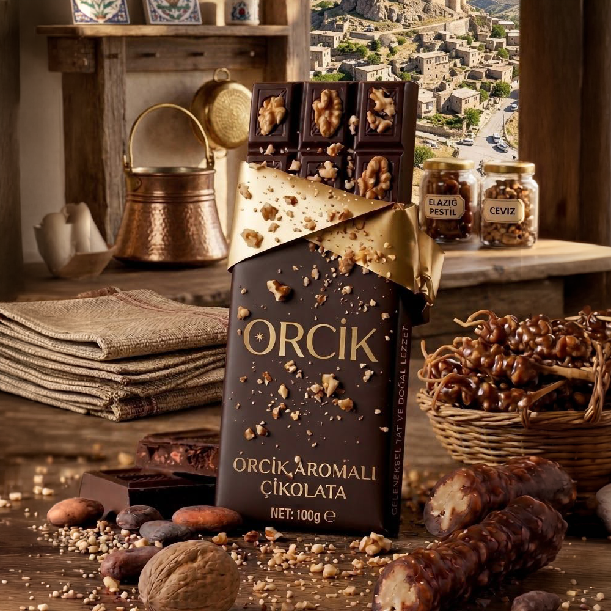
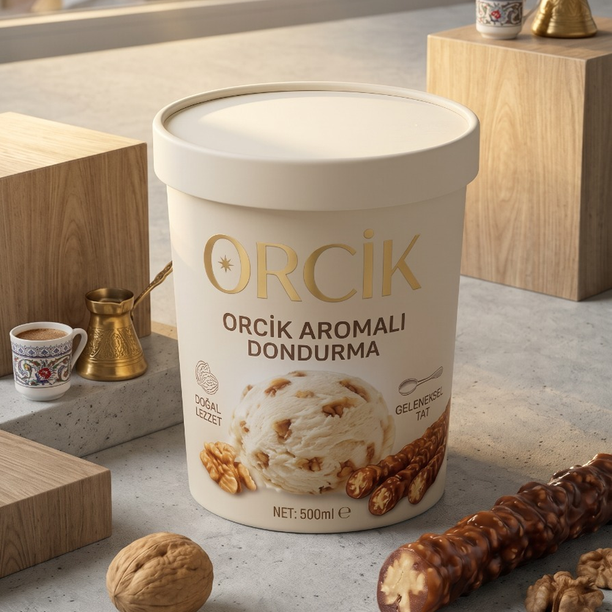
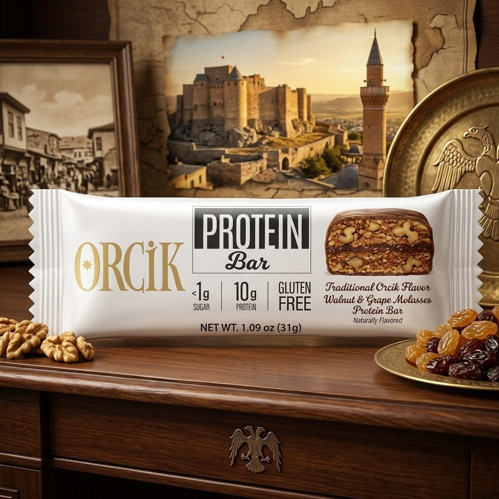
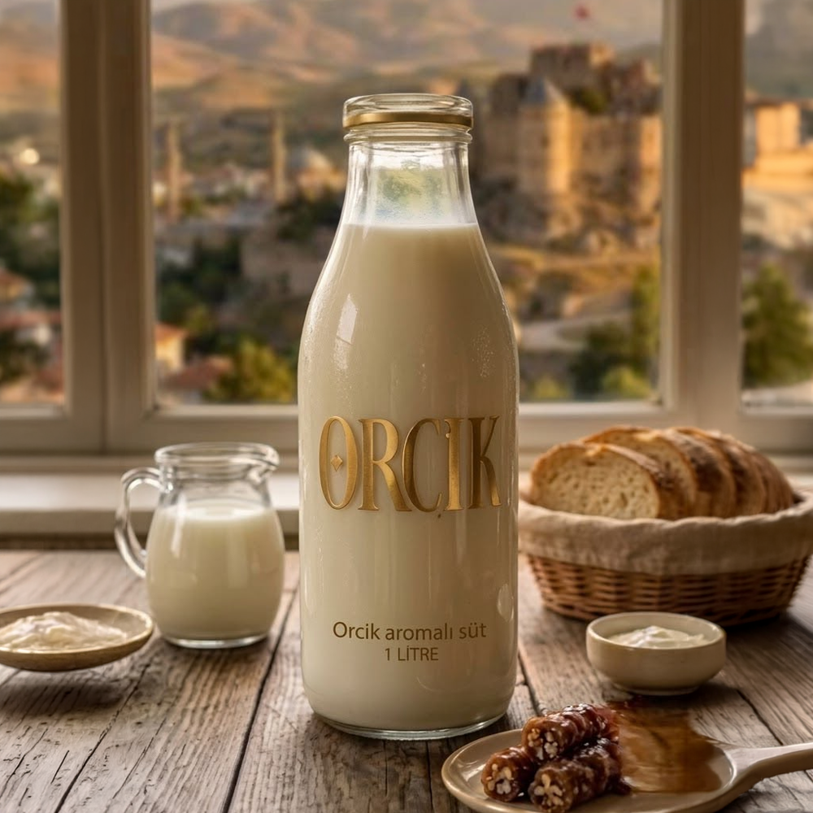

ORCİK: Gelenekten Geleceğe
Lüks E-Ticaret Deneyimi
Harput ve Elazığ’ın coğrafi tescilli orcik mirasını; inovatif gurme ürünler, soğuk zincir lojistiği ve birinci sınıf dijital müşteri deneyimiyle Türkiye’ye ve dünyaya açan yeni nesil gıda markası.
Geleneksel Lezzetlerdeki Temel Sorunlar
Yöresel lezzetlerin hak ettiği değere ulaşmasını engelleyen yapısal pazar boşlukları:
Kalite & Sahtecilik Riski
Piyasada ucuz glikoz şurubu, nişasta fazlası ve kalitesiz ithal cevizle üretilen sahte ürünler hakiki orcikin itibarını zedeliyor.
Yerellikten Çıkamama
Geleneksel üreticiler modern e-ticaret, marka dili, ambalaj estetiği ve güvenilir soğuk zincir lojistiğinden yoksun kalıyor.
Genç Kuşağa Ulaşamama
Klasik sunumlar Z kuşağı ve şehirli gurmelere hitap etmiyor. İnovatif türev ürünler (çikolatalı, dondurmalı, protein bar vb.) eksik.
ORCİK Çözüm Modeli
Geleneksel reçeteleri koruyarak modern gastronomi ve doğrudan tüketiciye (D2C) e-ticaret modeli:
%100 Doğal & Tescilli Reçete
Yalnızca Elazığ Öküzgözü üzüm şırası, taze yerli dolgun cevizler ve geleneksel 3 kat kazan batırma tekniğiyle katkısız üretim.
İnovatif Ürün Ailesi
Chocorcik, Orcik Dondurması, Şekersiz Protein Bar, Orcik Aromalı Süt ve Dibek Kahvesi ile lezzeti 365 güne yayan zengin portföy.
Garantili Soğuk Zincir
Özel strafor koruma kutuları, buz aküleri ve hızlı teslimat protokolü ile Harput'taki tazelik bozulmadan doğrudan kapıya teslim.
Gelenekselden İnovatife Geniş Portföy
Müşterilerin farklı tüketim alışkanlıklarına ve anlarına özel tasarlanmış ürünler:

Chocorcik
Elazığ orciki & Belçika çikolatası uyumu

Orcik Dondurması
Keçi sütü, manda kaymağı ve bol orcik

Orcik Protein Bar
İlave şekersiz, üzüm şırası & dut özlü bar

Orcik Süt & Kahve
Çiftlik sütü & Harput dibek aroması
4 Adımda Hakiki Orcik Yapımı
Yüzyıllardır aktarılan değişmeyen sabır ve ustalık süreci:
Yerli Ceviz Dizimi
Özenle seçilen yerli yarım cevizler pamuk ipliklere tek tek elle dizilir.
Öküzgözü Şırası
Öküzgözü üzümleri ezilir, beyaz toprakla kestirilip berraklaştırılır.
3 Kat Kazan Batırma
Kaynayan sıcak bulamaca ipler 3 kez daldırılıp kuruma payı verilir.
Gölgede Kurutma
Harput rüzgarı alan sundurmalarda 10-15 gün dinlendirilerek olgunlaşır.
Lüks Gurme Tasarım Sistemi
Kullanıcıyı doğrudan Harput’un bağlarına ve zanaat atmosferine çeken estetik mimari:
Renk Paleti & Tipografi
Derin Orman Yeşili (#1a3b2a) ve Sıcak Antik Altın (#c5ab78). Başlıklarda prestijli Cormorant Garamond, gövdede modern Plus Jakarta Sans.
Akıllı Dark / Light Tema
Kullanıcının sistem tercihine duyarlı, tek tuşla anında geçiş yapan ve tercihi yerel hafızada (localStorage) saklayan çift tema desteği.
Video Hero & Mikro-Animasyonlar
Arka planda sessizce oynayan iştah kabartıcı video alanı, yumuşak geçişler, duyuru bandı ve sezgisel gezinme çubuğu.
Akıllı Sepet & Satış Hunisi
Sepet terk oranlarını azaltan ve ortalama sipariş tutarını (AOV) artıran dinamik mekanizmalar:
Dinamik Gramaj / Varyant Seçimi
Ürün kartlarında veya modalda gramaj değiştiğinde indirimli ve eski fiyatlar anında güncellenir; tek tıkla sepete eklenir.
Ücretsiz Kargo & Soğuk Zincir Eşiği
1.500 TL üzeri ücretsiz kargo, 2.000 TL üzeri özel strafor & buz aküsü koruma barı ile müşteriye anlık ilerleme bildirimi sunulur.
Kupon & Offcanvas Çekmece
Sayfadan ayrılmadan açılan akıcı sepet çekmecesi, aktif kupon indirimleri ve anında güncellenen özet tablosu.
Yalın, Hızlı ve Yüksek Güvenilirlik
Ağır harici kütüphaneler yerine saf ve optimize edilmiş modern web standartları:
Vanilla JS & CSS Custom Properties ile sıfır framework yükü.
Optimize edilmiş resimler ve asenkron varlık yüklemesi.
Her ekran boyutunda kusursuz ve dokunmatik uyumlu deneyim.
Hedef Kitle Segmentasyonu
Geleneksel lezzeti kimler, neden satın alıyor?
Şehirli Gurmeler
Hakiki, katkısız, coğrafi işaretli lezzet peşinde olan ve kaliteye prim ödeyen kitle.
Sporcu & Sağlıklı Yaşam
Rafine şekersiz, doğal üzüm şırası ve yüksek ceviz proteini arayan aktif tüketiciler.
Kurumsal & Hediyelik
Özel tasarım kutularda prestijli bayram, yılbaşı ve iş hediyesi göndermek isteyen kurumlar.
Memleket Özlemi Çekenler
Metropollerde yaşayan ve Harput'un gerçek damak tadını güvenle kapısında bulmak isteyenler.
Gelecek Vizyonu & Yol Haritası
ORCİK markasını küresel bir gastronomi oyuncusuna dönüştürecek 3 fazlı plan:
D2C & Türkiye Geneli Yayılım
Web sitesi üzerinden 81 ile doğrudan satış, influencer & şef işbirlikleri, dijital pazarlama ve sadakat programı.
Omnichannel & Gurme Marketler
Havalimanı duty-free noktaları, seçkin kahve zincirleri (Chocorcik & Bites eşleşmesi) ve butik şarküterilerde yer alma.
Global E-İhracat
Avrupa ve Körfez ülkelerine Türk süper gıdası (Superfood from Anatolia) konseptiyle ihracat ve uluslararası sertifikasyonlar.
Geleneksel Tatlar, Modern Yarınlar.
Harput’un bereketli topraklarından doğan bu lezzet yolculuğunda bizimle olduğunuz için teşekkür ederiz.